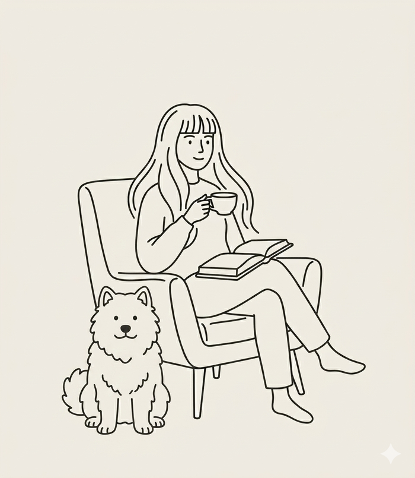

Tuotesuunnittelija · Buildie Oy · Tampere
Olen kasvanut Buildiella tukihenkilöstä tuotehallintaan kuuden vuoden aikana, ja aloittanut kahdesti tiimin ensimmäisenä työntekijänä. Tuotepalveluissa olin rakentamassa toimintamalleja tiimin kasvaessa. Tuotehallintaan siirtyessäni työskentelin yksin toimitusjohtajan alaisuudessa, kunnes osoitin tarpeen omalle tiimille. Tiimi rakennettiin nykyiseen kolmen hengen muotoonsa.
Yritys on samaan aikaan kasvanut kuudesta työntekijästä yli 30 hengen organisaatioksi. Tukityö, koulutus ja käyttöönotot antavat pohjan, jolla nojaan tuotekehityksen päätöksissä tänään. Seuraava luonteva askel on tuotepäällikön rooli.
Työn ulkopuolella aikani vievät toimistokoira Edi, luonnossa haahuilu sekä podcastit ja äänikirjat.
Buildie on rakennusalan SaaS-yritys, joka on kasvanut urani aikana 6 työntekijän startupista yli 30 hengen organisaatioksi (tuotekehityksessä 15 henkeä). Olin Tuotepalvelut-tiimin ensimmäinen rekrytoitu työntekijä ja Tuotehallinnan ainoa työntekijä ennen tiimin laajentumista. Molempien tiimien työtavat ovat rakentuneet kanssani.
Siirryin Tuotehallintaan ensimmäisenä työntekijänä toimitusjohtajan alaisuudessa. Työn pohjalta tiimi kasvoi nykyiseen kolmeen henkilöön (lisäkseni kollega ja tuotejohtaja). Vastaan tuotekokonaisuuksien liiketoiminta-arvosta ja kehityksestä ideasta toteutukseen, osallistun roadmap-työhön ja priorisointiin yrityksen tasolla. Laajemmassa tuotekehityksessä on 14 kollegaa — yhteistyö kehittäjien, suunnittelijoiden ja teknisen Product Ownerin kanssa on päivittäistä.
Rooli toimi siltana asiakasrajapinnan ja tuotekehityksen välillä. Tunnistin asiakastutkimukseen perustuen kasvumahdollisuuksia ja uusia tuotekehitystarpeita, konseptoin ratkaisuja ja muodostin niistä toteuttamiskelpoisia kehityspaketteja.
Vastasin asiakkuuksien käytön kehittämisestä ja organisaatioiden muutosjohtamisesta. Kehitin toimialan käytäntöjä ja määrittelin vaatimuksia käyttöympäristöille.
Tuotepalvelut-tiimin ensimmäinen rekrytoitu työntekijä. Vastasin teknisestä tuesta ja sen prosessien kehittämisestä alusta asti. Koulutin asiakkaita ja vastasin käyttöönottojen määrittelystä. Toimintamalleja rakennettiin tiimin kasvaessa.
Kaikki ovat antaneet loistavaa palautetta upeasta projektin johtamisesta ja asiakastarpeen täsmällisestä ymmärryksestä.